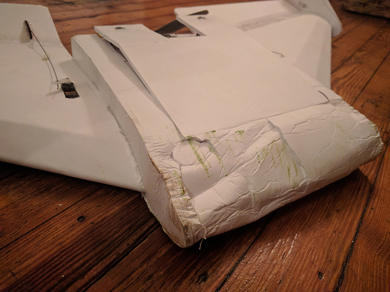
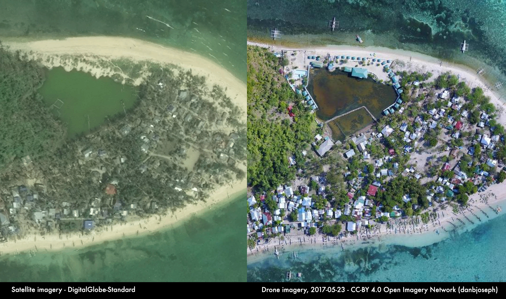

What is this all about?
I'm attempting to bring together various resources, document methods, and record my experiences building drones for the purpose of mapping. Right now I'm focused on fixed-wing designs but that doesn't mean I won't look at quadcopters (or hexacopters! or octocopters!) in the future. Vertical takeoff and landing designs (VTOLs) are also an airframe type I would love to explore. But one thing at a time.
DIY
DIY is awesome. There can be cost savings associated with a DIY solution. You can adapt and build on a project to customize for specific applications and to improve it as the tech changes and new options, such as better sensors or batteries, become available.
If you've built a drone yourself it becomes easier to troubleshoot in situations where it may not be practical, or even possible, to get custom service support from the vendor. Quick repairs may be possible, resulting in delays rather than permanent groundings when operating away from support infrastructure and systems.
If you've built it yourself it's easier to practice flying. Rebuilding an airframe constructed largely from foamboard purchased at Dollar Tree is a lot easier then sending in a multi-thousand dollar drone for repairs by the company. Being able to control your drone manually is an important skill for emergency situations or in the event something goes wrong with a planned mission. And flying can be hard.

Mapping?
Yes. It's beautiful to look at and drone imagery is awesome for mapping. There are tradeoffs, one of the biggest ones being the total area you can cover. But it's high resolution (easily 5cm or less), there are no clouds in the way, it's super recent, etc. Compare the two images below to get an idea.

Get in touch
Reach out. I'd love to learn what you've tried, what you think I should try, and anything else you might have to say.
@danbjoseph | danbjoseph@gmail.com | danbjoseph
Acknowledgement
Folks behind awesome, open source software projects mentioned within (and those not mentioned here) whom share the outputs of their labor and love with the rest of us.
Ed, the guy behind ExperimentalAirlines, who has put an amazing amount of video resources up on his YouTube channel.
My super supportive team members at Red Cross.
The start of this work is tied a Master's capstone project at Penn State University. A big thank you to my advisor Dr. James O’Brian.
And tons of others, who I will try to get around to calling out by name.